发布记录
2021.3.5：发布
WINE打印机方案
本文档记录龙芯实验室的基于WINE的打印方案。本文档尽可能地记录下设计思路和调试经验，尽可能避免代码细节和调试细节。代码细节主要蕴含在源码和注释之中，调试细节主要蕴含在各个调试软件的手册之中。附件尽可能包含了所有WINE打印机方案的资料。其目录结构如下，
docs/：各类相关文献，关键内容已添加到尾注nt5/：WinNT5源码和编译结果，内容已全添加到尾注src/：WINE打印机方案的源码，源码也可以从实验室的gitlab获取，内容已全添加到尾注utils/：各类工具
docs/内容较多，直接和本文档相关的文献已添加到尾注，其他文献作为必要时的研究参考。另外3个文件夹nt5/、src/、utils/的内容已全数添加到尾注。
目录
[toc]
设计思路
提出WINE打印机方案的主要目的是提速。因为用Win虚拟机运行Win打印机驱动的方案虽然简单稳定，但是速度慢。
WINE是能够在Linux等系统上运行Win用户程序的兼容层。WINE不是像虚拟机或者模拟器一样运行Win操作系统，而是将Win API翻译为Linux调用，因此WINE能够高效地运行Win用户程序（用gcc-9.3以同样的参数编译32位版本的Coremark，WINE-5.2-13的效率比Linux原生效率高4.11%。）。Win打印机驱动是用户态的，因此理论上WINE可以运行Win打印机驱动。
官方的WINE支持打印机，前提是安装了相应的Linux打印机驱动。WINE将Linux打印机驱动包装给了Win用户程序。我们称这个打印方案为“官方打印方案”。官方打印方案使用的是Linux打印机驱动，而非Win打印机驱动。因此需要对WINE做扩展，让其能够使用Win打印机驱动。目前基于这个目的，实验室给WINE官方打印方案做了修改和扩展，我们称之为“扩展打印方案”。因为是修改和拓展，则存在诸多不高效的设计。但因为修改和拓展对WINE本身的影响相对是小的，这能够使实验阶段的扩展打印方案更稳定，能够我们能够更快地验证猜想——“在WINE上可以运行Win打印机驱动”。下面简介WINE的官方打印方案和扩展打印方案。而关于更高效更具挑战的打印方案，将会在文末的“未来工作”中简介。

-
官方打印方案
WINE启动时扫描Linux中安装的打印机，在Win系统内生成对应的打印机信息（注册表、c:\windows\win.ini等），添加可用的打印机选项。在打印时调用wineps.drv驱动。wineps.drv可以看做是一个虚拟打印机。该虚拟打印机将Win用户程序的打印请求转换成一个ps（Post Script）文件，然后将打印任务重定向到Linux的打印系统——CUPS（Common UNIX Printing System）。
-
扩展打印方案
总体和官方打印方案流程相似。为了减少实验阶段的工作量，扩展打印方案仅支持位图（bitmap, bmp）格式的打印。将其他格式的打印请求转换为位图，即可满足所有打印格式需求。新增一个和wineps.drv地位相同的驱动，称之为wingdi.drv，来包装Win打印机驱动。位图打印程序的输入为bmp格式的文件，然后通过wingdi.drv输出raw数据，最后通过USB发送给打印机。
wingdi.drv是扩展打印方案的关键。它详细涉及Win打印机驱动的原理。获取Win原理的路径主要来自官方文档（在线文档或开发包中的离线文档123）和Win源码4。
通过官方文档可以了解到在WinXP时期，打印机厂商广泛使用GDI类型的打印驱动。因为在Win里，该类型打印机和显示设备有相同处理流程，所以被称作GDI（Graphics Device Interface）类型。这类打印机驱动由两部分构成：
-
printer graphics DLL及其附属DLL，
负责图形计算，是打印机实际打印功能的承担者。因此在相关文档和代码中，该DLL会被称作graphics DLL、driver DLL。
-
printer interface DLL及其附属DLL，
负责打印机参数设置，即负责印机属性的对话框、打印机任务队列的任务属性对话框等。因此在相关文档和代码中，该DLL会被称作interface DLL、UI DLL、configuration DLL。
有些打印机可以只依赖graphics DLL，便能进行基础打印，比如目前实验选用的佳能i80。因此实验思路是先实现WINE调用graphics DLL。阶段目标是用i80打印机打印bmp图片。然后再实现WINE调用interface DLL。阶段目标是用惠普1020打印机打印bmp图片。（这两个阶段目标均一达成。）
通过调试对比Win源码和WINE源码，可以明确WINE缺失的功能。通过增补这些功能，来让打印机驱动运作起来。调试过程中还参考了其他项目的思路和代码。调试graphics DLL参考了DDIWrapper项目5和软件所同行的工作6。DDIWrapper项目用WINE包装打印机驱动，并嵌入到CUPS打印系统里。它只支持graphics dll的调用。且它和WINE是分离开的，这给调试带来一些不便。扩展打印方案弥补了这两个不足。调试Win源码也同时参考了ReactOS和OpenNT项目。这两个项目是Win内核的开源实现。因为其设计相对简单，且功能和Win保持兼容，所以可以辅助理解Win晦涩难懂的代码。在“调试”这一章节，将更详细的介绍我们所使用的调试经验。
安装&使用
按照扩展打印方案的图所示，需要安装3部分内容——位图打印程序、Win打印机驱动（wingdi.drv包装的内容）、WINE。
首先安装WINE。扩展打印方案中WINE的wgf分支已经添加wingdi.drv，
# 从实验室的gitlab获取，或是从wine.zip中获取
git clone --single-branch --branch wgf http://172.17.103.58/loongsonlab/wine.git
# 和正常编译WINE一样
cd wine
./configure
make
然后编译位图打印程序（bmprnt或bmprnt-cli），
# 图形界面bmp打印程序，从实验室的gitlab获取如下，或是从bmprnt.zip中获取
git clone http://172.17.103.58/printer/bmprnt.git
cd bmprnt
winemaker --wine32 && make
# 命令行bmp打印程序，从实验室的gitlab获取，或是从bmprnt-cli.zip中获取
git clone http://172.17.103.58/printer/bmprnt-cli.git
cd bmprnt-cli
make
最后安装Win打印机驱动。目前这个过程还没做到自动化，均为手动完成。其宗旨是把Win系统的相关设置和文件复制到WINE中。因此这个过程要借助装有Win的虚拟机的帮助。以佳能i80打印机驱动为例。
-
在Win虚拟机中安装打印机驱动：
- 若有i80打印机，则连上Win虚拟机后可以直接安装驱动
- 若没有i80打印机，
- 用解压软件把驱动的安装文件解压到一个目录
- 从控制面板添加打印机的界面出发，手工添加驱动，端口选择
file://，选择对应的驱动目
-
复制打印机相关注册表：
HKEY_LOCAL_MACHINE\SYSTEM\CurrentControlSet\Control\Print\Printers\Canon i80HKEY_LOCAL_MACHINE\SYSTEM\CurrentControlSet\Control\Print\Environments\Windows NT x86\Drivers\Version-3\Canon i80
-
复制打印机驱动到
~/.wine/drive_c/windows/system32/spool/drivers/w32x86/3/ -
修改WINE打印机配置
~/.wine/drive_c/windows/win.ini，- [devices]下面添加
Canon i80=wingdi.drv,GDI:Canon i80,15,45 - [PrinterPorts]下面添加
Canon i80=wingdi.drv,GDI:Canon i80,15,45
- [devices]下面添加
安装完WINE、位图打印程序和打印机驱动后。如下，用WINE运行位图打印程序即可。
wine bmprnt # 或是wine bmprnt-cli
调试
目前已经调通两款打印机——佳能i80和惠普1020。根据调试环境的不同，可以把调试手段分为2部分——调试Win和调试WINE。每种调试手段分为3部分进行说明，准备、操作、技巧。
Win
根据编译工具链的不同，在Win中调试器可以分为2类。
-
GNU的工具链（gcc）
以winedbg为代表。它使用的调试信息附加在PE文件中，格式为dwarf。
-
微软的工具链（vc）
以windbg为代表。它使用的调试信息是独立的pdb文件。
尽管有2种调试信息的转换工具，比如cv2pdb，但做不到完美转换。因此应该根据不同的需求选择不同的调试器进行调试。比如，要想了解Win内核工作原理，则需要用windbg进行内核调试。再比如，想要对比同一用户程序在WINE和Win中运行的异同，则需要用gdb在Linux和Win中调试对比。
windbg
windbg既可以调试Win用户程序，又可以调试Win内核，功能强大且稳健。windbg通常是Win开发包中的附属工具。任意安装一个开发包即可，比如WDK1、DDK2和SDK3。
准备：
首先编译待调试的程序——Win操作系统（Win内核+用户程序）4。参考编译WinXP源码的文档。编译出的WinXP有2个版本chk版7和fre版8（微软工具链的术语check、free和GNU工具链的术语debug、release等价）。chk版本无法正常运行，其原因还去未探明，fre版本可以正常运行。尽管使用的是fre版本，但是调试没有遇到本质性的障碍。因此接下来都围绕fre版本展开。
然后需要做如下设置和替换操作。这些步骤不分先后顺序：
-
设置源码的路径
windbg菜单File->Source File Path设置为
<根路径>\srv03rtm。srv03rtm\9中是经过预处理的源文件（.c, .h, .res, ...）和编译中间文件（.o, ...）。需要强调的是这里的源文件已经经过Win编译器预处理，和源码中的源文件略有不同。调试信息中（.pdb）所含的行号信息匹配这些源文件。 -
设置调试信息的路径
windbg菜单File->Symbol File Path设置为
<根路径>\binaries.x86fre\symbols.pri\retail;<根路径>\binaries.x86fre\symbols\retail。前者既包含函数信息也包含源码信息，后者只包含函数信息。binaries.x86fre\10文件夹内存放的是各类二进制文件（.exe, .dl, ...）和调试信息文件(.pdb)。windbg在寻找pdb文件时，会根据模块的类型依次在上述2个路径中寻找。比如尝试加载gdi32.dll的调试信息时，windbg则会在dll\中寻找gdi32.pdb。 -
替换二进制文件
binaries.x86fre\中的.pdb文件并不匹配fre版操作系统里的.exe文件和.dll文件。.pdb文件匹配binaries.x86fre\中的.exe文件和.dll文件。因此需要将调试目标.exe和.dll替换为binaries.x86fre\中对应文件。例如，需要把notepad.exe替换为binaries.x86fre\notepad.exe，把C:\WINDOWS\system32\gdi32.dll替换为binaries.x86fre\gdi32.dll。
操作：
上述步骤完成后，用windbg开始调试。根据调试对象的不同，大致可以分为下面3类。详细调试操作参阅windbg附带的手册11，Common WinDbg Commands12也可作为入门速查手册。
-
调试用户程序
直接打开待调试程序即可。
-
调试Win内核
需要两个运行2个Win内核，一个充当调试内核，另一充当被调试内核，两个内核可以版本不一致。上面的准备工作在调试内核中完成，即调试内核需要大磁盘空间容纳源码和调试信息，被调试内核不需要太大磁盘空间。虚拟机VirtualBox和QEMU-kvm中都可以正常使用windbg调试Win用户程序，但是目前只在QEMU-kvm中成功使用windbg调试Win内核，VirtualBox参考Debugging Windows Kernel from Linux。
-
在调试Win内核中，调试用户程序
参考Debug user mode application with kernel debugger->How to do hybrid user-mode/kernel-mode debugging?。
技巧：
- 打开调试符号信息的报错通道
!sym noisy。 - 强制重新加载某模块的符号信息
.reload /f <module>。 - 除了设置位置断点（例如
bp），还可以设置事件触发断点。比如加载某模块时中断程序执行，sxe ld:<module>。
gdb
在Win上使用GNU工具链有2套方案——MinGW和CygWin。MinGW是使用微软C库，只能编译专门写给Win运行的代码。CygWin使用Win版GNU的C库。其目的是在Win上，尽可能模拟Linux的各种C库函数特性，以便在Win上编译且运行Linux程序。因此，为了探究Win底层工作原理，即使用微软C库，我们应该使用MinGW提供的GNU工具链。
准备：
MinGW编译器既可以在Win上运行，也可以在Linux上运行。我们更倾向在Linux上运行编译任务。i686-w64-mingw32-gcc-win32是在64位Linux上编译32位Win程序的mingw-gcc。编译出来的程序既可以用WINE运行，也可以在Win上直接运行。在Win上，使用与MinGW搭配的gdb13进行调试。
操作：
和普通的gdb一致。
技巧：
和普通的gdb一致。
WINE
WINE提供给我们的调试工具有两套，一个是WINE自身的调试通道（Debug Channels），另一个是调试器winedbg。
调试通道
调试通道是WINE输出消息的机制。WINE的调试通道本质上是利用stdout和stderr输出各种信息。这些stdout和stderr受环境变量WINEDEBUG的控制。
准备：
宏函数WINE_DEFAULT_DEBUG_CHANNEL()被用来划分调试模块。宏函数TRACE()被来输出调试信息。所以在源代码按需调用这些函数即可。编译之后，这些函数便能在运行时给我们提供需要的信息。在扩展打印方案中引入如下模块：
winspool模拟Win打印缓冲池模块。对应dlls/winspool.drv/。打印作业送到winspool缓存后winspool选择合适的后端实施打印。localspl本地打印后端。对应dlls/localspl/。wingdidrv我们新增的Win gdi驱动 for wine，把Win .dll驱动包装成wine需要的接口。对应dlls/wingdi.drvprintgdi32中打印模块，对应dlls/gdi32/printdrv.cdrivergdi32中驱动加载模块，对应dlls/gdi32/driver.ceng我们新增的对应Win GRE模块的engine实现（即EngXXX函数，会被Win驱动回调）
操作：
参考WINE官方文档Debug channels。
winedbg (gdb)
准备：
在Win的部分已经说明winedbg和windbg属于不同的工具链，因此需要用GNU的编译器来编译待调试程序。使用winegcc和MinGW-gcc均可。二者略有区别。winegcc编译出来的是Linux的.so文件，只能在WINE上运行。MinGW-gcc编译出来的是Win的PE文件既可以在WINE上也可以在Win上运行。
在编译时添加-gdwarf-2 -gstrict-dwarf参数，以免winedbg不识别调试信息。
操作：
和普通的gdb一致，可参考man winedbg。
技巧：
-
用winegcc编译Win程序时，可以使用winemaker脚本自动生成Makefile。比如上文编译位图打印程序bmprnt时就用到了winemaker。
-
winedbg可以用gdb当前端，命令行
winedbg --gdb可以启用。gdb前端需要手动跳过一些合法的SIGSEGV，需要用
symbol-file命令手动加载部分模块的调试信息。 -
协助调试通道展示错误现场。
比如，调试通道能够展示SetLastError的错误号，但是没法知道何时何地出现的设置的错误号。可以借助winedbg的watch功能查看。
其他
二进制分析相关工具：
[仅Win] depends14分析.exe文件和.dll文件所依赖的库。
[仅Win] IDA-pro15反编译工具。用于反编译打印机的驱动。反编译出来的C文件用来辅助调试。
[仅Linux] pev16工具集用于分析.exe文件和.dll文件。比如该工具集中的readpe是类似readelf工具。
源码相关工具：
[Win&Linux] cvdump17分析Win的.pdb文件，比如可以cvdump -sf <pdb file>输出相关的源文件。尽管cvdump是Win程序，但是经测试可以用WINE在Linux上稳定运行。
[Win&WINE] reshacker18分析Win资源文件（.rec和.rc）。
调试相关工具:
[Win&Linux] 编译器去掉优化选项-O2，方便更精确的打断点。
[Win&Linux] 在调试器不能准确打断点的情况下，可以在源码中添加asm ("int $3");辅助调试。
除了上述调试工具，还可以参考如下网站：
- Github上的windows-syscalls项目记录了历代Win的系统调用号，可以用于辅助调试Win内核。
- 一个逆向工程师的关于Win的博客Geoff Chappell, Software Analyst。
- 龙芯实验室张福新关于windbg的笔记和winedbg的笔记。
- 龙芯实验室谢本壹关于调试Win驱动的笔记。
未来工作
扩展打印方案：
- WINE和二进制翻译结合
- 完善打印机接口即printer interface DLL对应的打印机配置窗口
- 适配更多打印机
- 集成到Linux的CUPS打印系统中
- 性能瓶颈分析
高效打印方案：
-
改造Win代码来替换WINE中的打印模块，
比如现有的gdi32、winspool、localspl模块都用Win代码来改造。这样能够使得扩展打印方案更加稳定。增加非GDI打印机的支持也更加简单。
尾注
- [Win软件] Adobe PDF阅读器，附件名7.0_AdbeRdr70_enu.exe
[Win内核] WinNT5源码及编译工具，附件名nt5src.7z
8: [Win内核] free版本，附件名3790.x86fre.srckit.201111-1534_pro.iso
7: [Win内核] check版本，附件名3790.x86chk.srckit.201111-0902_pro.iso
10: [Win内核] binaries.x86fre文件夹压缩包，附件名binaries.x86fre.zip
9: [Win内核] srv03rtm文件夹压缩包，附件名srv03rtm.zip
2: [Win软件] Device Development Kit，附件名1830_usa_ddk.iso
17: [Win软件] cvdump，提取pdb文件的信息，附件名cvdump.exe
14: [Win软件] depends，解析DLL依赖，附件名depends22_x86.zip
13: [Win软件] gdb-MinGW，Win的gdb，附件名gdb-9.2-1-MinGW32-bin.zip
3: [Win软件] Software Development Kit，附件名GRMSDK_EN_DVD.iso
1: [Win软件] Windows Driver Kit，附件名GRMWDK_EN_7600_1.iso
18: [Win软件] reshacker，Win资源文件（.rc和.res）解析器，附件名reshacker_setup.exe
15: [Win软件] IDA-pro，附件名IDA-pro.tar.xz
5: [Linux软件] DDIWrapper，佳能打印机驱动包装层，在其README中有详细列举支持的打印机，附件名ddiwrapper_0.3-rc1.tgz，注：修改过后的WINE中自带，位于programs/printer/
20: [Linux软件] wine+bochs，附件名wine-bochs.李文刚.zip
16: [Linux软件] pev，PE文件分析工具包，主页https://github.com/merces/pev
[Win手册] windbg常用指令，附件名WinDbg_cmds.pdf
11: [Win手册] windbg手册，来源DDK，附件名winddk.debugger.chm
6: [论文] Linux平台下Windows打印设备驱动兼容框架设计与实现，附件名2019.linux_win_printer.金融通.软件所硕士.pdf
[论文] 二进制兼容系统的设计实现与性能优化，附件名2010.qemu_opt_wine.刘奇.计算所博士.pdf